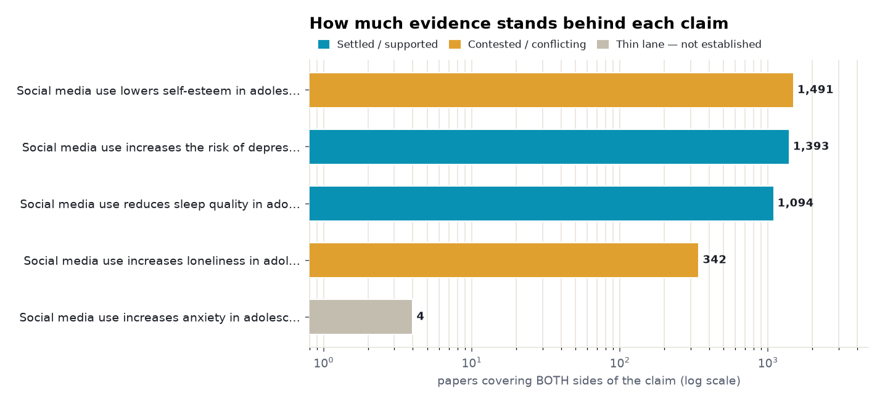
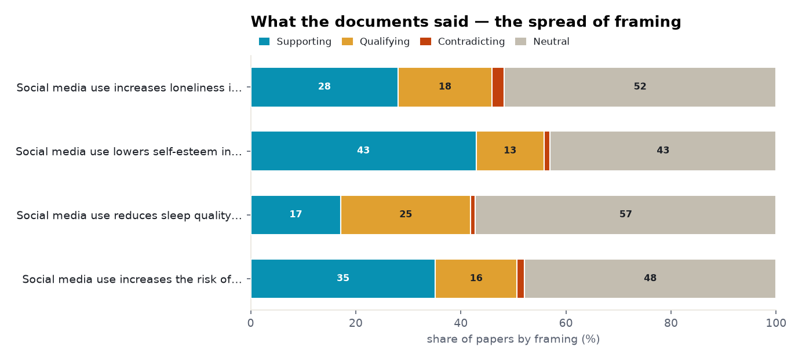
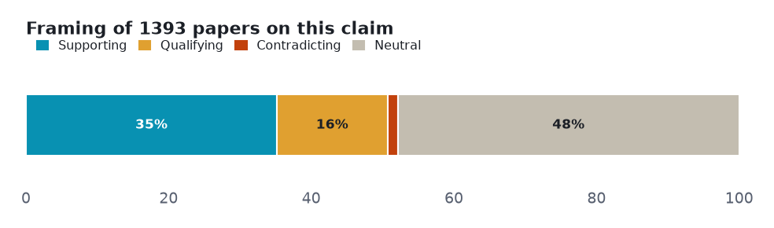
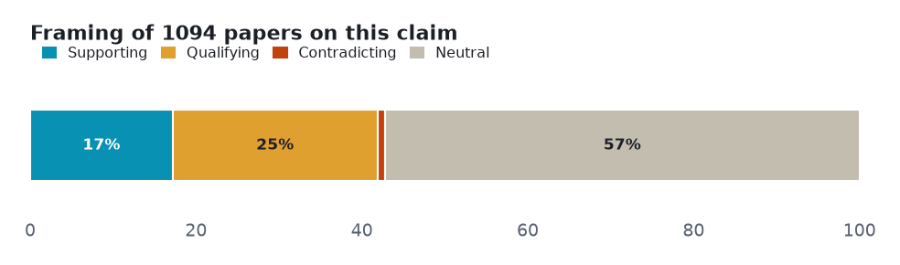
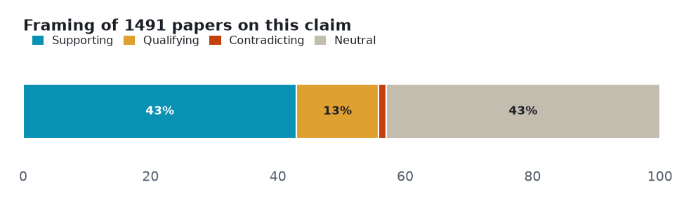
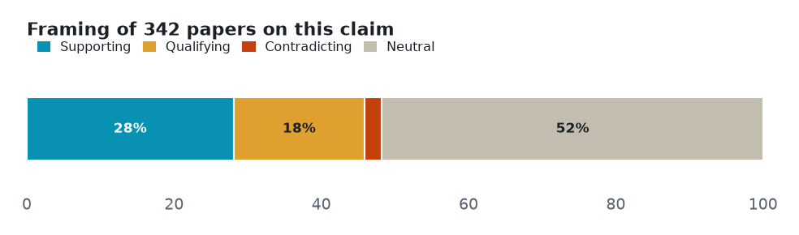

Five mental-health claims about adolescents and social media, each tested against both sides of the literature: the clearest signals are small (depression) or specific (night-time sleep), two outcomes are genuinely inconsistent, and the anxiety claim barely has a both-sides research lane at all — the headline outruns the evidence.
Every number below is retrieved, not generated. Each angle is a claim run against the research layer on both sides — the papers that affirm it and the papers that push back — so the verdict reflects how much evidence exists and which way it leans, not a single cherry-picked study. Effect sizes are quoted verbatim and verified; thin lanes are reported as inconclusive rather than charted as fact.
| Subject | social media and adolescent mental health |
| Retrieved | 2026-11-07 |
| Coverage | research typed 107% · research 104.2% |
| Source | Prism public API — research.evidence (one call per angle) |
Each section is one claim. The bar shows how the papers framed it — supporting, qualifying (yes, but…), contradicting, or neutral — and the verdict weighs that spread against how deep the evidence runs. A claim can be loudly discussed yet thinly evidenced; the brief says which.
Two cross-cutting views before the angle-by-angle read: how much both-sides evidence each claim has, and how the literature splits on framing.


Mixed framing with no dominant lean, but the pooled evidence points one way. The signal is real but small — the headline meta-analysis finds a correlation of r = 0.11; a longitudinal study adds the nuance that it is appearance-focused use, not raw time on social media, that tracks depressive symptoms.

Common findings
Verdict: Supported · both-sides papers: 1,393 · mean stance: +0.17 · contested: 16.9%
Mostly positive framing, with a substantial cautionary minority — and qualifying papers outnumber plain supporting ones. The most consistent of the five, but specific: the landmark study ties poorer sleep to night-time and emotionally-invested use rather than total screen time; qualifying papers (270) outnumber supporting ones (188).

Common findings
Verdict: Supported · both-sides papers: 1,094 · mean stance: +0.04 · contested: 25.6%
The framing leans negative, but the read documents could not confirm a specific self-esteem effect. The deepest lane (1,491 papers) and the one that most openly admits uncertainty — a scoping review calls the wellbeing findings 'inconsistent, inconclusive and contradictory', so the brief files it as conflicting despite a negative framing lean.

Common findings
Verdict: Conflicting · both-sides papers: 1,491 · mean stance: +0.23 · contested: 14.1%
Genuinely bidirectional — the same tool can deepen or relieve loneliness. The evidence points both ways: cross-sectional work suggests social media can exacerbate appearance anxiety and loneliness, while a lockdown study found it used as a constructive coping strategy against isolation.

Common findings
Verdict: Conflicting · both-sides papers: 342 · mean stance: +0.12 · contested: 20.2%
Only 4 papers cover both sides of this claim at the title level — the 104,148-paper 'both sides' figure is really the subject lane (social-media research in general), which does not establish the connection the claim asserts. The nearest pooled estimate comes from short-form-video research and includes adults.
Thin lane — 4 papers cover both sides. Not charted as established; reported as the boundary of the evidence.
Common findings
Verdict: Not established · both-sides papers: 4
Counts and shares measured from the data. Quoted findings verbatim and verified. Effect sizes here are correlations and associations, not pooled risk ratios, and are reported as-is. Where a claim's both-sides title lane is thin — anxiety resolves to just 4 papers — it is reported as not established, rather than inferred from the much larger subject lane of social-media research in general.
Each angle is one call against the research-evidence layer: the claim is posed, both sides of the literature are retrieved, and the framing tally is computed from the returned papers. Thin lanes are named, not inflated — the point of the exercise is to show where the evidence is deep, where it is contested, and where it barely exists.
A Prism worked example. Charts are generated from the retrieved data; every quoted finding is verbatim and verified. data.json holds the underlying numbers.